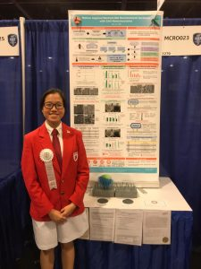
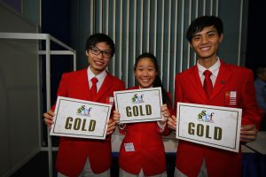
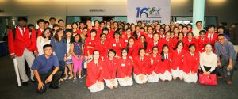
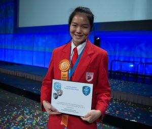

Achievements in Research
NJCians participate in various science competitions at both the national and international levels. The quality of research is evident from the many awards garnered by NJCians. The strong research programme is owed to dedicated staff and partners who provide excellent mentorship.
2019

Intel International Science and Engineering Fair
- Tan Yee Lee was selected to represent Singapore in the Intel International Science and Engineering Fair 2019 held in Phoenix, Arizona, USA and clinched the 3rd Award in the Category of Microbiology.
- Tan Yee Lin was conferred Most Outstanding Junior College Science Student Award 2019, jointly sponsored by World Scientific Publishing Company (WSPC) and the Imperial College Alumni Association of Singapore (ICAAS). As the winner of this award, Yee Lin attended the Stockholm International Youth Science Seminar (SIYSS) in early Dec 2019, in conjunction with the Nobel Prize Presentation Ceremony.
- 
Singapore Science and Engineering Fair
- 1 Intel International Science and Engineering Fair Finalist
- 3 Gold Awards
- 3 Silver Awards
- 5 Bronze Awards
- 7 Merit Awards
- 11 Special Awards
A*STAR Talent Search
- Tan Yee Lee (Commendation)
Singapore Junior Water Prize
- Wang Haiyi – First prize for Main Category
Haiyi will be representing Singapore in Stockholm Junior Water Prize in August.
Google Science Fair
- Global finalists: Emma Tan Xiu Wen , Ho Jia Yi Jenevieve (the only Singapore team within the TOP 20 global finalists). They will receive a trip to Mountain View, CA, USA for the opportunity to participate in the finalist event in July 2019. Learn more about their project here.
The girls’ interviews with AsiaOne and Business Insider.
2002 - 2018
2018
Intel International Science and Engineering Fair
- Kee Jin Wen – 3rd Award in the Chemistry Category and a Special Award from Spectroscopy Society of Pittsburgh
- Koo Wei De – 2nd Award in the Materials Science Category
Singapore Science and Engineering Fair
- 2 Intel International Science and Engineering Fair Finalist
- 2 Broadcom Masters International 2018 Singapore Representative, Junior Scientist (Emma Tan Xiu Wen , Ho Jia Yi Jenevieve)
- 6 Gold Awards
- 6 Silver Awards
- 4 Bronze Awards
- 6 Merit Awards
- 6 Special Awards
A*STAR Talent Search
- Kee Jin Wen (Commendation)
- Aleena Madathiparambil Saju (Commendation)
2017
Intel International Science and Engineering Fair
- Paula Nazarene Evangelista Say – Fourth Award (Translational Medicine)
Singapore Science and Engineering Fair
- 1 Intel International Science and Engineering Fair Finalist
- 4 Gold Awards
- 3 Silver Awards
- 9 Bronze Awards
- 10 Merit Awards
- 7 Special Awards
2016
Intel International Science and Engineering Fair
- Wang Yuhang – Third Award (Chemistry) and Special Award (King Abdul-Aziz & his Companions Foundation for Giftedness and Creativity)
- Jia ShuYi- Fourth Award (Chemistry) and Special Award (American Chemical Society, Honourable Mention)
- Sim Yu Ki – Special Award (U.S. Agency for International Development, Honourable Mention)
Singapore Science and Engineering Fair
- 3 Intel International Science and Engineering Fair Finalists
- 4 Gold Awards
- 4 Silver Awards
- 7 Bronze Awards
- 7 Merit Awards
- 5 Special Awards
A*STAR Talent Search
- Victoria Emily Hui Ting Buckland – First Prize (Institute)
- Sim Yu Ki & Wang Yuhang – Commendation Prizes


2015
Intel International Science and Engineering Fair
- Ching Yi Jie Preston – Finalist
Taiwan International Science and Engineering Fair
- Victoria Emily Hui Ting Buckland – First Prize (Chemistry Category):
Singapore Science and Engineering Fair
- 1 Intel International Science and Engineering Fair Finalist
- 2 Gold Awards
- 1 Silver Awards
- 5 Bronze Awards
- 8 Merit Awards
2014
Intel International Science and Engineering Fair
- Lee Xin-Jing, Shannon – Young Scientist Award, Best of Category Award (Energy and Transportation) and First Award (Energy and Transportation)
Singapore Science and Engineering Fair 2014
- 1 Intel International Science and Engineering Fair Finalist
- 2 Gold Awards
- 3 Silver Awards
- 3 Bronze Awards
- 4 Merit Awards

2013
Taiwan International Science Fair
- Tammy Lim Ting Yi – First Prize (Chemistry Category)
Singapore Science and Engineering Fair
- 2 Gold Awards
- 1 Silver Award
- 6 Bronze Awards
- 5 Merit Awards
2012
Singapore Science and Engineering Fair
- 2 Gold Awards
- 2 Silver Awards
- 5 Bronze Awards
- 4 Merit Awards
2011
Singapore Science and Engineering Fair
- 2 Silver Awards
- 2 Bronze Awards
- 4 Merit Awards
2010
Intel International Science and Engineering Fair 2010
- Chua Zheng Fu Edrei – Special Award (Society for Applied Spectroscopy, Northern California Section, Third Award)
Singapore Science and Engineering
- 1 Intel International Science and Engineering Fair Finalist
- 3 Gold Awards
- 3 Silver Awards
- 4 Bronze Awards
- 3 Merit Awards
2009
Singapore Science and Engineering Fair
- 1 Intel International Science and Engineering Fair Finalist
- 6 Gold Awards
- 2 Silver Awards
- 1 Bronze Awards
- 8 Merit Awards
2008
Intel International Science and Engineering Fair
- Lim Yi Hui – Forth Award (Chemistry)
Singapore Science and Engineering
- 1 Intel International Science and Engineering Fair Finalist
- 3 Gold Awards
- 3 Silver Awards
- 3 Bronze Awards
- 4 Merit Awards
2007
Intel International Science and Engineering Fair
- Sewa Du Ying, Navin Brian Ramakrishna – Second Award (Team Projects)
Singapore Science and Engineering
- 1 Intel International Science and Engineering Fair Finalist
- 4 Gold Awards
- 5 Silver Awards
- 2 Bronze Awards
- 7 Merit Awards
2006
Intel International Science and Engineering Fair
- Wong Kuan Yee, Wong Siew Han – Third Award (Team Projects)
Singapore Science and Engineering
- 1 Intel International Science and Engineering Fair Finalist
- 2 Gold Awards
- 3 Silver Awards
- 2 Bronze Awards
- 6 Merit Awards
2005
Singapore Science and Engineering Fair
- 2 Gold Awards
- 3 Silver Awards
- 1 Bronze Awards
- 4 Merit Awards
2004
Singapore Science and Engineering Fair
- 1 Gold Awards
- 1 Silver Awards
- 3 Bronze Awards
- 3 Merit Awards
2003
Singapore Science and Engineering Fair
- 2 Gold Awards
- 1 Merit Awards
2002
Singapore Science and Engineering Fair
- 1 Gold Awards
- 1 Silver Awards
- 2 Bronze Awards
- 1 Merit Awards
Research Publications
Under the guidance of mentors, some students may even have the opportunity to publish research papers!
Harman Johll, Milla Samuel, Ruey Yi Koo, Hway Chuan Kang, Yee-Chia Yeo and Eng Soon Tok. Influence of hydrogen surface passivation on Sn segregation, aggregation, and distribution in GeSn/Ge(001) materials. Journal of Applied Physics 117, 205302 (2015).
Abstract
Plane-wave density functional theory is used to investigate the impact of hydrogen passivation of the p(2×2) reconstructed Ge 1−xSnx surface on Sn segregation, aggregation, and distribution. On a clean surface, Sn preferentially segregates to the surface layer, with surface coverages of 25%, 50%, and 100% for total Sn concentrations of 2.5%, 5.0%, and 10.0%, respectively. In contrast, a hydrogen passivated surface increases interlayer migration of Sn to subsurface layers, in particular, to the third layer from the surface, and results in surface coverages of 0%, 0%, and 50% corresponding to Sn concentrations of 2.5%, 5.0%, and 10.0%, respectively. Hydrogen transfer from a Ge-capped surface to the one enriched with increasing Sn surface coverage is also an unfavorable process. The presence of hydrogen therefore reduces the surface energy by passivating the reactive dangling bonds and enhancing Sn interlayer migration to the subsurface layers. For both clean and hydrogenated surfaces, aggregation of Sn at the surface layer is also not favored. We explain these results by considering bond enthalpies and the enthalpies of hydrogenation for various surface reactions. Our results thus point to reduced Sn segregation to the surface in a Ge 1−xSnx epitaxial thin film if CVD growth, using hydride precursors in the hydrogen limited growth regime, is used. This would lead to a more abrupt interface and is consistent with recent experimental observation. Hydrogenation is therefore a promising method for controlling and manipulating elemental population of Sn in a Ge 1−xSnx epitaxial thin film.
Click here to view the paper!
Harman Johll, Michael Dao Kang Lee, Sean Peng Nam Ng, Hway Chuan Kang and Eng Soon Tok. Influence of Interconfigurational Electronic States on Fe, Co, Ni-Silicene Materials Selection for Spintronics. Scientific Reports 4, 7594 (2014).
Abstract
Growth through controlled adsorption of ferromagnetic elements such as Fe, Co and Ni on two-dimensional silicene provides an alternative route for silicon-based spintronics. Plane wave DFT calculations show that Fe, Co and Ni adatoms are strongly chemisorbed via strong sigma bonds, with adsorption energies (1.55 – 2.29 eV) that are two to six times greater compared to adsorption on graphene. All adatoms adsorb more strongly at the hole site than at the atom site, with Ni adsorbing strongest. Of the dimer configurations investigated, the hole – hole, b-atom – hole, vertically stacked at hole, vertically stacked at b-atom and bridge sites were found to be stable. The Co and Ni dimers are most stable when adsorbed in the hole-hole configuration while the Fe dimer is most stable when adsorbed in the atom-hole configuration. Metal-to-silicene and interconfigurational s-to-d electron transfer processes underpin the trends observed in adsorption energies and magnetic moments for both adatoms and dimers. Adsorption of these metals induces a small band gap at the Dirac Cone. In particular Co adatom adsorption at the hole site induces the largest spin-polarized band gaps of 0.70 eV (spin-up) and 0.28 eV (spin-down) making it a potential material candidate for spintronics applications.
Click here to view the paper!
Magazine Articles
a: “Reflections on the OCPA8 Poster Awards” by Sharon Tan
b: “An Adventure into Research” by Michael Lee
Journal Articles:
- Influence of Interconfigurational Electronic States on Fe, Co, Ni-Silicene Materials Selection for Spintronics by Harman Johll, Michael Dao Kang Lee, Sean Peng Nam Ng, Hway Chuan Kang and Eng Soon Tok
- Influence of hydrogen surface passivation on Sn segregation, aggregation, and distribution in GeSn/Ge(001) materials by Harman Johll1,(a), Milla Samuel1, Ruey Yi Koo1, Hway Chuan Kang2,Yee-Chia Yeo3 and Eng Soon Tok4,(a)
- Eggplant-derived microporous carbon sheets: towards mass production of efficient bifunctional oxygen electrocatalysts at low cost for rechargeable Zn–air batteriesby Bing Li,a Dongsheng Geng,a Xinjing Shannon Lee,b Xiaoming Ge,a Jianwei Chai,a Zhijuan Wang,a Jie Zhang,a Zhaolin Liu,*a T. S. Andy Hor*ac and Yun Zong*a
- A General Metal-Assisted Synthesis of α-Halo Oxime Ethers from Nitronates and Nitro Compounds by Alexey Yu. Sukhorukov1,*, Maria A. Kapatsyna2, Tammy Lim Ting Yi3, Hyeong Ryool Park3, Yana A. Naumovich2, Petr A. Zhmurov1, Yulia A. Khomutova1, Sema L. Ioffe1,4 and Vladimir A. Tartakovsky1